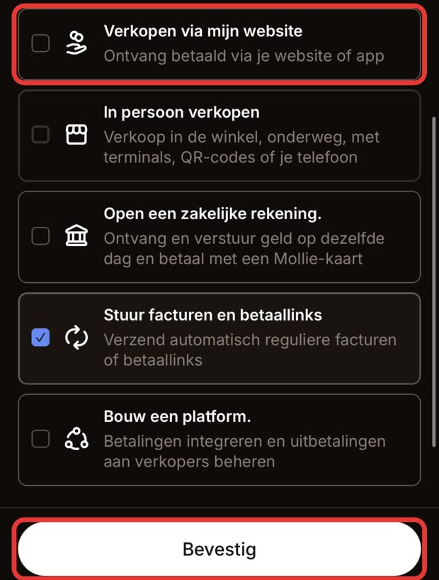
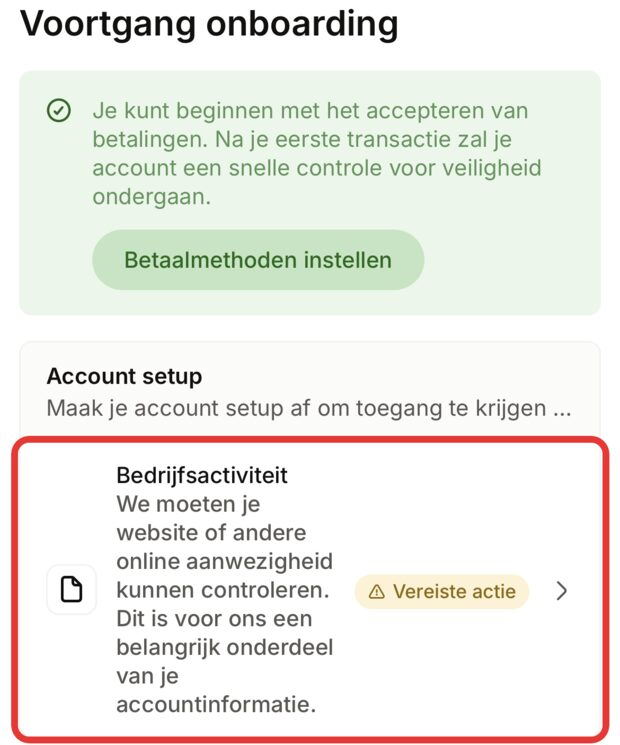
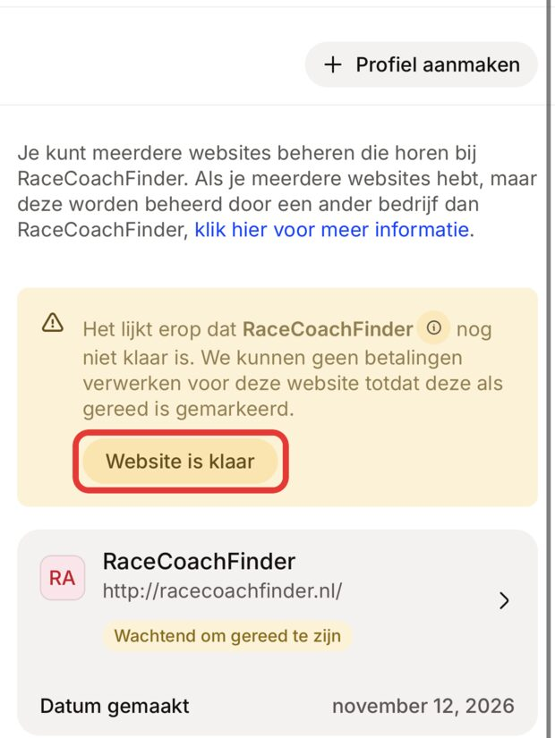
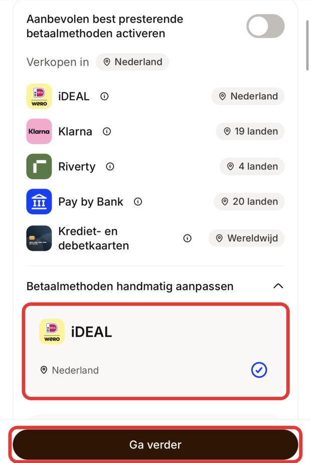
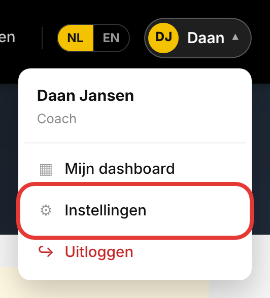
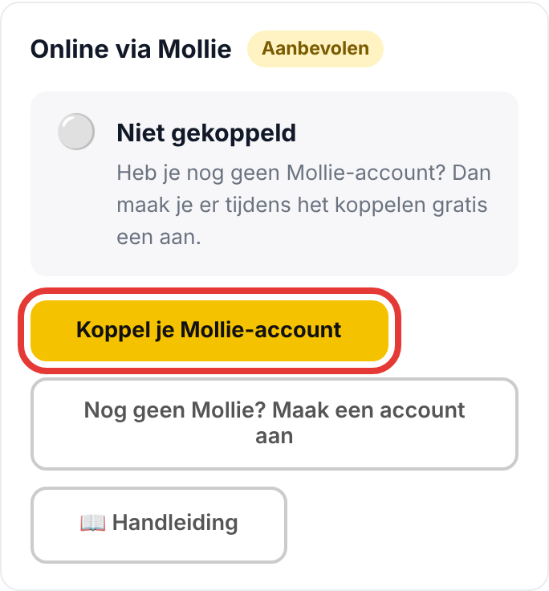
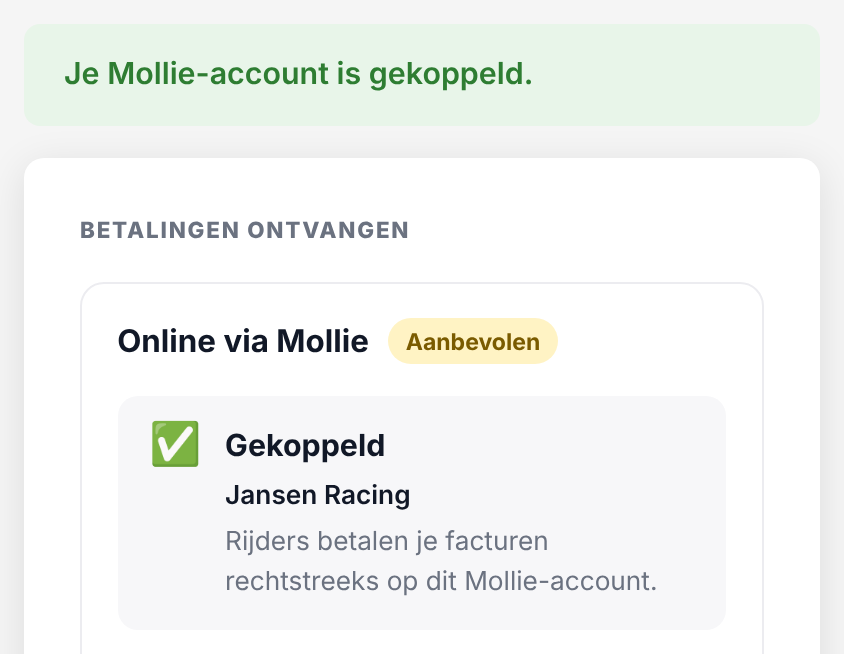
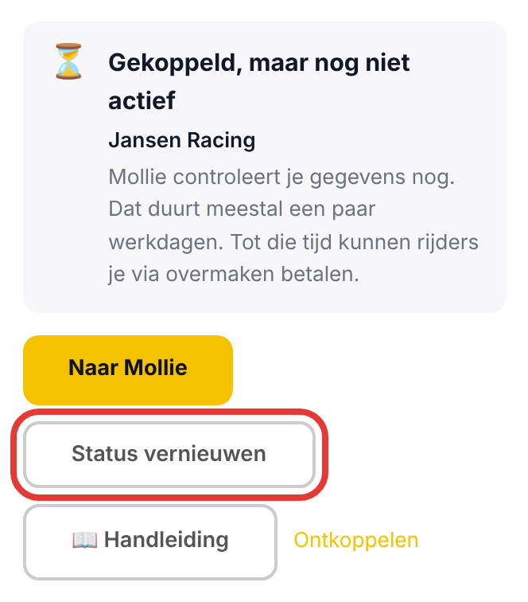
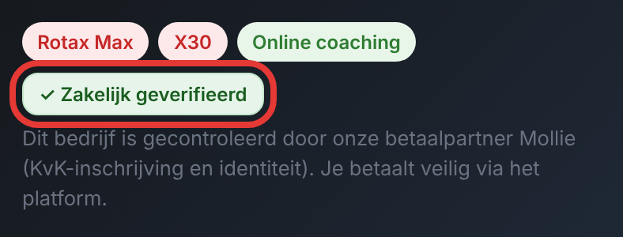

.png)
Mollie koppelen: stap voor stap
Met Mollie betalen rijders je facturen online, met iDEAL of creditcard. Het geld komt rechtstreeks op jouw eigen rekening. Je doet dit één keer en bent in ongeveer een kwartier klaar (daarna controleert Mollie je gegevens nog).
Wat heb je nodig?
- 🏢Je KvK-nummer (8 cijfers). Geen KvK? Lees dan dit.
- 🪪Je paspoort of ID-kaart
- 🏦Je bankrekening (IBAN) waar het geld op moet komen
- ⏱️Ongeveer 15 minuten
We doen het samen met een voorbeeld
De stappen
Maak een gratis Mollie-account
Heb je al een Mollie-account? Ga dan meteen naar stap 4 en kijk of je website en iDEAL goed staan.
- Klik op de knop hieronder. Mollie opent in een nieuw tabblad.
- Vul je e-mailadres en een wachtwoord in.
- Mollie stuurt je een mail. Klik op de link in die mail om je e-mailadres te bevestigen.
Een Mollie-account is gratis: geen abonnement, geen vaste kosten.
Klaar? Naar stap 2 ↓Vertel Mollie wat je doet
Mollie vraagt hoe je Mollie gaat gebruiken.
- Vink Verkopen via mijn website aan. Rijders betalen je namelijk via de website van RaceCoachFinder.
- Klik op Bevestig.

Vul je bedrijfsgegevens in
Op de startpagina van Mollie staat "Voortgang onboarding". Daaronder zie je wat Mollie nog van je nodig heeft. Klik op elke regel met ⚠ Vereiste actie en vul hem in:
- Bedrijfsgegevens: je KvK-nummer. Mollie vult je bedrijfsnaam en adres daarna meestal zelf in.
- Jouw gegevens: je naam, geboortedatum en een foto van je paspoort of ID-kaart.
- Bankrekening: het rekeningnummer (IBAN) waar Mollie je geld naartoe stuurt.
- Bedrijfsactiviteit: je website. Dat doe je in stap 4.

Voeg je website toe
Mollie wil weten waar je je diensten aanbiedt. Heb je geen eigen website? Gebruik dan gewoon je profiel op RaceCoachFinder.
- Klik bij Mollie op Bedrijfsactiviteit (of ga naar Instellingen → Profielen).
- Plak bij Website de link naar je profiel:
https://www.racecoachfinder.nl/coach-detail.html?id=…
Je vindt deze link op RaceCoachFinder via Mijn dashboard → Bekijk profiel: kopieer het adres uit de adresbalk van je browser. Ben je ingelogd, dan staat hier vanzelf jouw eigen link.
- Vraagt Mollie om een omschrijving? Kopieer dan deze tekst:
Ik geef als coach racetrainingen (karting en autosport). Rijders boeken en betalen mij via het platform RaceCoachFinder.
- Staat er een gele melding met Website is klaar? Klik daarop.

Zet iDEAL aan
Nu kies je hoe rijders je mogen betalen.
- Klik op de startpagina van Mollie op Betaalmethoden instellen.
- Zorg dat iDEAL aangevinkt is. Krediet- en debetkaarten mag ook.
- Klik op Ga verder.

Staat er een klokje bij iDEAL? Dan controleert Mollie het nog. Dat is goed: je kunt gewoon verder.
Klaar? Naar stap 6 ↓Koppel Mollie aan RaceCoachFinder
- Ga op RaceCoachFinder naar Instellingen: klik rechtsboven op je naam en kies ⚙ Instellingen.

- Bovenaan staat het blok Betalingen ontvangen. Klik op Koppel je Mollie-account.

- Je gaat naar Mollie. Log in met je Mollie-account (als dat nog niet zo is).
- Mollie vraagt of RaceCoachFinder betalingen voor je mag aanmaken. Klik op Toestaan.
- Je komt vanzelf terug op RaceCoachFinder. Bovenaan staat nu "Je Mollie-account is gekoppeld."

Wacht op de controle van Mollie
Een nieuw Mollie-account wordt eerst gecontroleerd. Dat duurt meestal 1 tot 3 werkdagen. Zolang staat er "Gekoppeld, maar nog niet actief", met daaronder wat er nog moet gebeuren.

- Krijg je een mail van Mollie dat ze nog iets nodig hebben? Vul dat in bij Mollie.
- Klik af en toe op Status vernieuwen. Als Mollie klaar is, staat er "Gekoppeld".
- Wil je in de tussentijd al een factuur sturen? Vul dan bij Via overmaken je rekeningnummer in. Rijders maken het bedrag dan zelf over.
Klaar!
Vanaf nu betalen rijders je facturen online. Het geld komt op je Mollie-account en Mollie maakt het naar je bankrekening over. Je krijgt ook het label ✓ Zakelijk geverifieerd op je profiel.

Wat kost het? Mollie rekent per betaling een klein bedrag, bijvoorbeeld €0,32 bij iDEAL. De rijder betaalt bovenop je factuur 2% servicekosten aan RaceCoachFinder; dat gaat niet van jouw bedrag af.
Ik heb geen KvK-nummer
Er staat "nog geen website", maar die heb ik wel toegevoegd
Bij het koppelen zie ik het verkeerde bedrijf
Mollie vraagt om meer gegevens
Kan ik Mollie later weer loskoppelen?
Kom je er niet uit? Mail ons op racecoachfinder@gmail.com, dan helpen we je.
© 2026 RaceCoachFinder · KvK 99281465